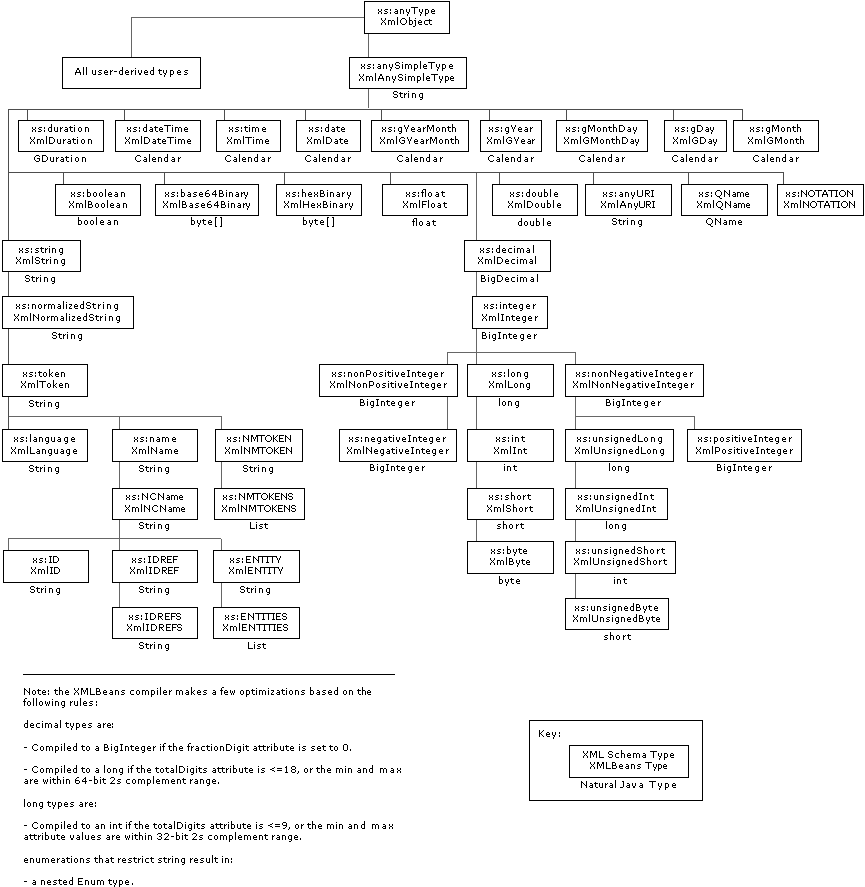

Just as with types in XML schema, the XMLBeans types based on schema are arranged in a hierarchy. In general, the hierarchy of XMLBean types mirrors the hierarchy of the schema types themselves. XML schema types all inherit from xs:anyType (which is at the root of the hierarchy); XMLBeans types inherit from XmlObject.
In XML schema, xs:anyType is the root type for two type categories: built-in and user-derived. Built-in schema types are common types defined by the XML schema specification. User-derived types are those you define in your schema. This topic lists the built-in types provided with XMLBeans. For information about user-derived types and the Java types generated from them, see Java Types Generated from User-Derived Schema Types.
The following figure illustrates the hierarchy of types, showing both built-in schema types and their XMLBeans parallels. Notice, too, that nearly all of the built-in types are also available as natural Java types.

As you can see from the figure above, all 46 built-in schema types are represented by an XMLBean type provided with XMLBeans. When using built-in XMLBean types, keep in mind that:
The following table lists the built-in schema types, along with their XMLBeans and natural Java parallels. Unless otherwise noted, natural Java types are in the java.lang package; XMLBean types are in the org.apache.xmlbeans package.